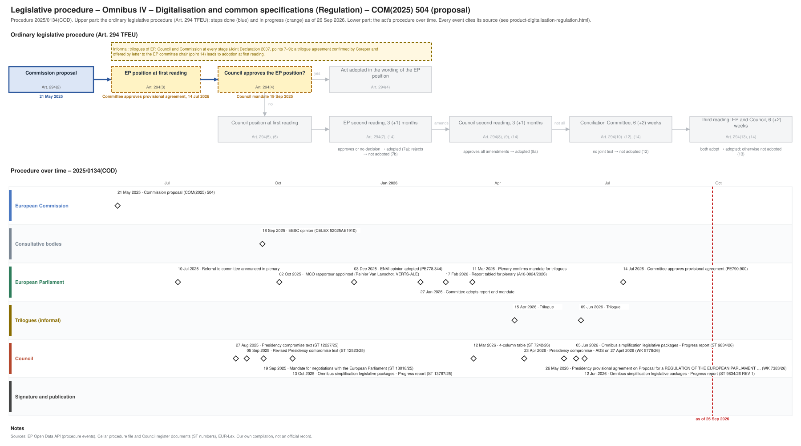

← All procedures · Regulation timeline
Procedure 2025/0134(COD), ongoing, as of 25 Sep 2026. Drawing: SVG · PNG · PDF (A3) · draw.io

| Date | Actor | Event | Document | Source |
|---|---|---|---|---|
| 2025-05-21 | European Commission | Commission proposal (Art. 294(2) TFEU) | COM(2025) 504 | Cellar (CELEX 52025PC0504) |
| 2025-07-10 | European Parliament | Referral to committee announced in plenary | EP Open Data API, procedure 2025-0134 (REFERRAL) | |
| 2025-08-27 | Council | Presidency compromise text | ST 12227/25 | Cellar procedure file 2025/134 (Council register) |
| 2025-09-05 | Council | Revised Presidency compromise text | ST 12523/25 | Cellar procedure file 2025/134 (Council register) |
| 2025-09-18 | Consultative bodies | EESC opinion | CELEX 52025AE1910 | Cellar procedure file 2025/134 |
| 2025-09-19 | Council | Mandate for negotiations with the European Parliament | ST 13018/25 | Cellar procedure file 2025/134 (Council register) |
| 2025-10-02 | European Parliament | IMCO rapporteur appointed (Reinier Van Lanschot, VERTS-ALE) | EP Open Data API, procedure 2025-0134 (participation RAPPORTEUR) | |
| 2025-10-13 | Council | Omnibus simplification legislative packages - Progress report | ST 13787/25 | Cellar procedure file 2025/134 (Council register) |
| 2025-12-03 | European Parliament | ENVI opinion adopted | PE778.344 | EP Open Data API, procedure 2025-0134 (COMMITTEE_ADOPTING_OPINION) |
| 2026-01-27 | European Parliament | Committee adopts report and mandate | EP Open Data API, procedure 2025-0134 (COMMITTEE_ADOPTING_REPORT) | |
| 2026-02-17 | European Parliament | Report tabled for plenary | A10-0024/2026 | EP Open Data API, procedure 2025-0134 (TABLING_PLENARY) |
| 2026-03-11 | European Parliament | Plenary confirms mandate for trilogues | EP Open Data API, procedure 2025-0134 (PLENARY_ENDORSE_COMMITTEE_INTERINSTITUTIONAL_NEGOTIATIONS) | |
| 2026-03-12 | Council | 4-column table | ST 7242/26 | Cellar procedure file 2025/134 (Council register) |
| 2026-04-15 | Trilogues (informal) | Trilogue | EP Open Data API, procedure 2025-0134 (INTERINSTITUTIONAL_NEGOTIATION) | |
| 2026-04-23 | Council | Presidency compromise - AGS on 27 April 2026 | WK 5778/26 | Cellar procedure file 2025/134 (Council register) |
| 2026-05-26 | Council | Presidency provisional agreement on Proposal for a REGULATION OF THE EUROPEAN PARLIAMENT … | WK 7383/26 | Cellar procedure file 2025/134 (Council register) |
| 2026-06-05 | Council | Omnibus simplification legislative packages - Progress report | ST 9834/26 | Cellar procedure file 2025/134 (Council register) |
| 2026-06-09 | Trilogues (informal) | Trilogue | EP Open Data API, procedure 2025-0134 (INTERINSTITUTIONAL_NEGOTIATION) | |
| 2026-06-12 | Council | Omnibus simplification legislative packages - Progress report | ST 9834/26 REV 1 | Cellar procedure file 2025/134 (Council register) |
| 2026-07-14 | European Parliament | Committee approves provisional agreement | PE790.900 | EP Open Data API, procedure 2025-0134 (COMMITTEE_APPROVE_PROVISIONAL_AGREEMENT) |
| Date | Document | Kind | Subject |
|---|---|---|---|
| 2025-05-26 | ST 9276/25 ADD 1 | council-transmission | COMMISSION STAFF WORKING DOCUMENT on small mid-cap companies Accompanying the documents Proposal for a DIRECTIVE OF THE EUROPEAN PARLIAMENT AND OF THE COUNCIL … |
| 2025-05-26 | ST 9318/25 | council-transmission | Proposal for a REGULATION OF THE EUROPEAN PARLIAMENT AND OF THE COUNCIL amending Regulations (EU) No 765/2008, (EU) 2016/424, (EU) 2016/425, (EU) 2016/426, … |
| 2025-05-26 | ST 9318/25 ADD 1 | council-transmission | ANNEXES to the Proposal for a REGULATION OF THE EUROPEAN PARLIAMENT AND OF THE COUNCIL amending Regulations (EU) No 76512008, (EU) 2016/424, (EU) 2016/425, … |
| 2025-05-26 | ST 9327/25 ADD 2 | council-transmission | COMMISSION STAFF WORKING DOCUMENT Accompanying the documents Proposal for a Directive of the European Parliament and of the Council amending Directives … |
| 2025-05-27 | ST 9276/25 REV 1 | council-transmission | Proposal for a REGULATION OF THE EUROPEAN PARLIAMENT AND OF THE COUNCIL amending Regulations (EU) 2016/679, (EU) 2016/1036, (EU) 2016/1037, (EU) 2017/1129, … |
| 2025-06-06 | WK 7556/25 | council-note | Simplification on digitalisation and common specifications - Commission presentation |
| 2025-06-16 | WK 7985/25 | council-note | Digitalisation and Common Specifications - Commission presentation |
| 2025-06-16 | WK 8008/25 | council-note | Compilation of written comments |
| 2025-06-17 | WK 8008/25 ADD 1 | council-note | Compilation of written comments |
| 2025-06-20 | WK 7985/25 REV 1 | council-note | Digitalisation and Common Specifications - Commission presentation |
| 2025-07-02 | WK 9207/25 | council-note | Work programme and priorities of the Danish Presidency - Presentation |
| 2025-07-09 | WK 9571/25 | council-note | Digitalisation and common specifications – Presidency discussion note |
| 2025-07-14 | ST 11580/25 | council-note | AOB for the meeting of the General Affairs Council on 18 July - Handling of the simplification agenda during the Danish Presidency - Explanatory note |
| 2025-08-27 | ST 12227/25 | council-compromise | Presidency compromise text |
| 2025-09-05 | ST 12523/25 | council-compromise | Revised Presidency compromise text |
| 2025-09-09 | WK 11239/25 | council-note | Digitalisation & common specifications + SMC - MS compiled comments |
| 2025-09-18 | CELEX 52025AE1910 | opinion | Opinion of the European Economic and Social Committee a) Proposal for a Regulation of the European Parliament and of the Council amending Regulations (EU) … |
| 2025-09-19 | ST 13018/25 | council-position | Mandate for negotiations with the European Parliament |
| 2025-10-13 | ST 13787/25 | council-progress-report | Omnibus simplification legislative packages - Progress report |
| 2025-12-04 | ST 16131/25 REV 1 | council-note | Simplification a) 2025 Annual Overview Report b) Annual Progress Reports - Presentation by the Commission - Exchange of views |
| 2025-12-16 | PE778.344 | ep-opinion | OPINION on the proposal for a regulation of the European Parliament and of the Council amending Regulations (EU) No 765/2008, (EU) 2016/424, (EU) 2016/425, … |
| 2026-01-09 | WK 252/26 | council-note | Priorities and work programme of the Cyprus Presidency - Presentation by the Presidency (AGS on 9 January 2026) |
| 2026-02-17 | A10-0024/2026 | ep-report | REPORT on the proposal for a regulation of the European Parliament and of the Council amending Regulations (EU) No 765/2008, (EU) 2016/424, (EU) 2016/425, (EU) … |
| 2026-03-12 | ST 7242/26 | trilogue | 4-column table |
| 2026-03-27 | WK 4718/26 | council-note | Digitalisation and common specifications |
| 2026-04-23 | WK 5778/26 | council-compromise | Presidency compromise - AGS on 27 April 2026 |
| 2026-05-26 | WK 7383/26 | agreed-text | Presidency provisional agreement on Proposal for a REGULATION OF THE EUROPEAN PARLIAMENT AND OF THE COUNCIL amending Regulations (EU) No 765/2008, (EU) … |
| 2026-06-05 | ST 9834/26 | council-progress-report | Omnibus simplification legislative packages - Progress report |
| 2026-06-12 | ST 9834/26 REV 1 | council-progress-report | Omnibus simplification legislative packages - Progress report |
| 2026-06-26 | PE790.900 | agreed-text | PROVISIONAL AGREEMENT RESULTING FROM INTERINSTITUTIONAL NEGOTIATIONS Proposal for a regulation of the European Parliament and of the Council amending … |
{kind=link}
{kind=link}